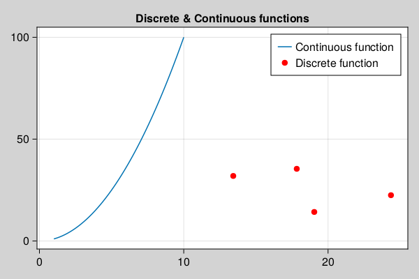

Machine Learning for General Ledger
In this chapter, we will learn the basics of Machine learning concepts in context of real world Finance data.
- About ML4GL
- What is AI, ML and Deep Learning
- What is data
- What is a function
- Discrete Functions
- Continuous Functions
- Using Functions
- Functions without any library
- Finding magical function
About ML4GL
This tutorial is gentle introduction to understand deep learning concepts with help of real life examples. This chapter demonstrates, how to train Finance data on given dataset and predict values.
This chapter is very detailed, beginner friendly tutorial and assume no prior ML experience.
For experienced programmers, please skip to Use Cases section in later chapters.
Objective and end goal of this tutorial is to analyze, evaluate and predict Organization growth (including but not limited to stock prices, Finance statements), based on technical analysis (stock prices, volumes etc.) and fundamental analysis (Finance Statements, Accounting and sub ledger details) combined together. GL Processes and GL ERD.
What is AI, ML and Deep Learning
as per Wikipedia The term "artificial intelligence" is intelligence demonstrated by machines, as opposed to natural intelligence displayed by humans and animals. Major AI researchers, now define AI in terms of rationality and acting rationally, which does not limit how intelligence can be articulated.
When Machines are trained to learn problem solving skills by use of information, this process of learning is Machine Learning. Further Deep learning is a special type of Machine learning where neural networks are used for learning purpose to solve a problem.
Now, introduction is out of the way, let’s learn meaning of these big words by actually doing it.
here are new AI, ML & DL definitions.
- If you see a Power Point, it's an AI.
- If you see code with calculus you understand, it's ML.
- If you see code with calculus you don't understand, it's DL.
- If you see calculus wrapped in layers, is NN.
- if calculus after calculus, is C/RNN.
- If calculus remembering calculus is LSTM.
- If calculus with physics is PINN.
- And so on…so forth…

What is data
Data is useful information described in terms of numbers, text, audio, video, images or any other format which can be read, write and understood in computers.
What is a function
\[ y = f(x)\]
In functional programming languages, Function is defined as an object, which take input values and maps to output values based on some logic.
Discrete Functions
Give a set or range of input values, if a function produces discrete and separate output (unconnected values), is a discrete function. for example: number of people in a concert
\[ y = f(x) = x + 12\]
\[ y = f(300) = 312\]
Continuous Functions
Give a set or range of input values, if a function produces output which can take any value with in a finite or infinite interval (connected values), is a continuous function. for example: height of one person in a concert may be anywhere within possible heights from 4ft to 7.2ft.
\[ y = f(m, f) = (mother's height + father's height)/2\]
\[ y = f(5, 6) = 5.5\]

Using Functions
Functions are smart, given an input value, it can always provide an output value.
We just learned essence of machine learning, if we know function logic, we can always predict output for a given input.
It's always true, however, problem is, we don't always know the logic, when function definition or logic is not known, Human, animals or machine fail to deliver output regardless of input available.
Most of the time, whether is working on mechanical, electrical or civil engineering projects, we can predict output based on inputs, provided problem/logistics are defined, calculated in certain ways using some functional formula, like F = ma or E = mc2
But what if, when logistics or mechanism is not known or partially known, is it still possible to predict output just based on some input?
Let's pretend, if we have a magical function which given an input produces a rationally acceptable output.
Machine learning, is data science of finding this missing magical function, which given an input produces a rationally acceptable output.
Functions without any library
Let's take an example,
Time taken to travel between two cities via Air, Bus, Train or personal vehicle depends mostly depends on speed and distance. However, there are other factors like weather, season, population or faults, which may occasionally impact travel time. However, knowing intensity of these factors, it's still possible to predict time taken rationally.
| vehicle | season | departure | speed | distance | bias | ETA |
|---|---|---|---|---|---|---|
| old bus | rain | 600 | 58 | 400 | 0.2 | 6.9 |
| jetpack | summer | 1100 | 999 | 400 | 99.0 | 2.05 |
| UFO | summer | 1700 | 1999 | 400 | 199.0 | 3.52 |
| UFO | winter | 1500 | 1999 | 400 | 199.0 | 3.52 |
| UFO | rain | 1600 | 1999 | 400 | 199.0 | 3.52 |
There are many assumptions when calculating Time taken, like, Passenger time taken for preparation or time to travel to bus, train station is not reflected in calculations. Let's capture these assumptions as bias for now.
Finding magical function
Let's assume that we don't know "time taken" formula or some reason like we don't exactly know speed of UFO or Jet Pack, how else we would know how much time it’s going to take to reach to destination when facts are unknown.
Answer may surprise you,
Ask a daily/weekly train or bus commuter, a person who has traveled long enough between two places, often knows and can rationally predict time taken in journey using different vehicles.
Of course, Time Taken = d/s + b may give same or better results, but it's been observed, if a person's mind is trained (traveled in this case) enough (aka is experienced), can predict and often beat pre-defined formulas and even apply learnings on unknown/unseen circumstances.
In a nutshell, human mind has magical functions stored in brain cells, let's call them neurons, which is trained on data rather than formulas. Using Trained functions, one can apply learning rationally and predict outcome.
Neural network deep learning is nothing but an art of finding this magical function which can be used to rationally predict outcomes based on some input data.